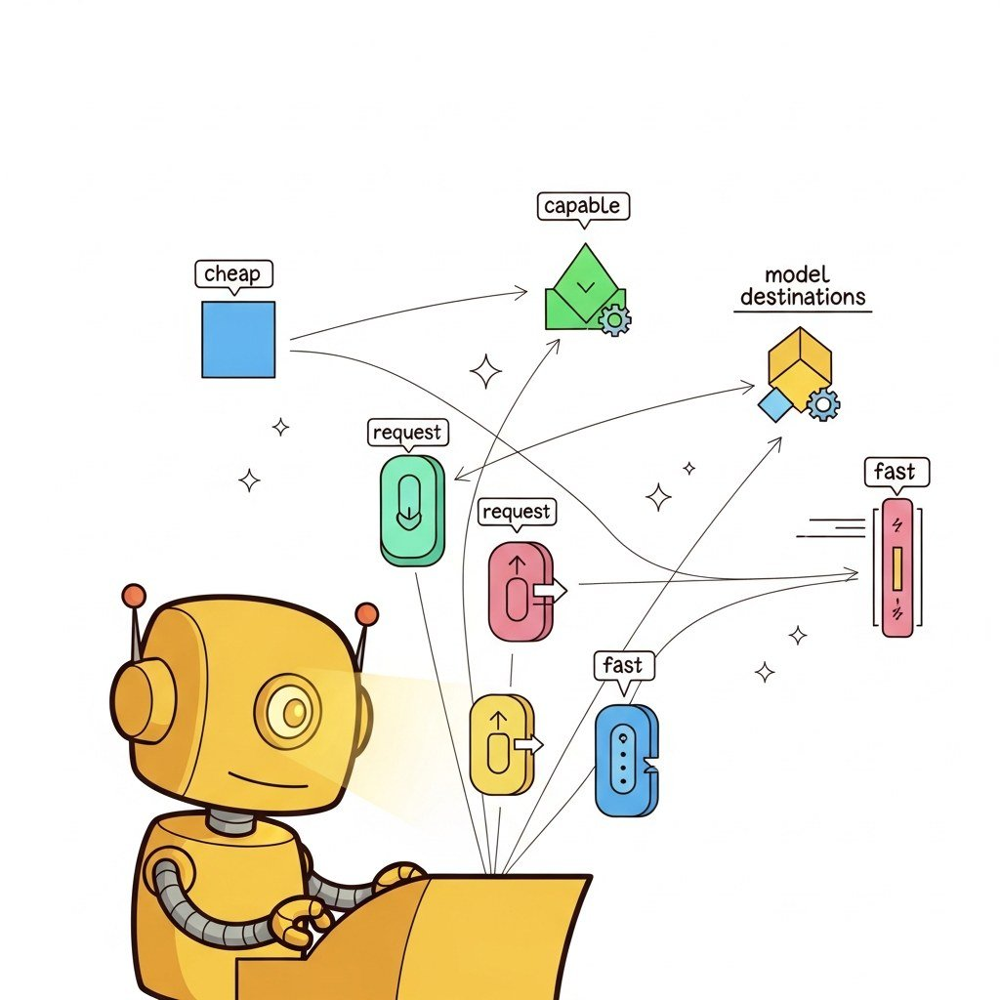

Big Picture
Production LLM deployments need gateways for rate limiting, model routing for cost/quality optimization, and observability. This chapter covers the gateway pattern, intelligent routing, and the operational surface that AI gateways expose.